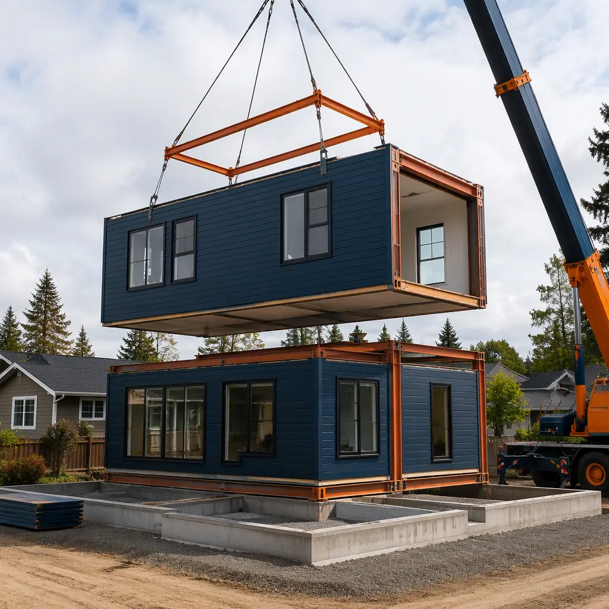
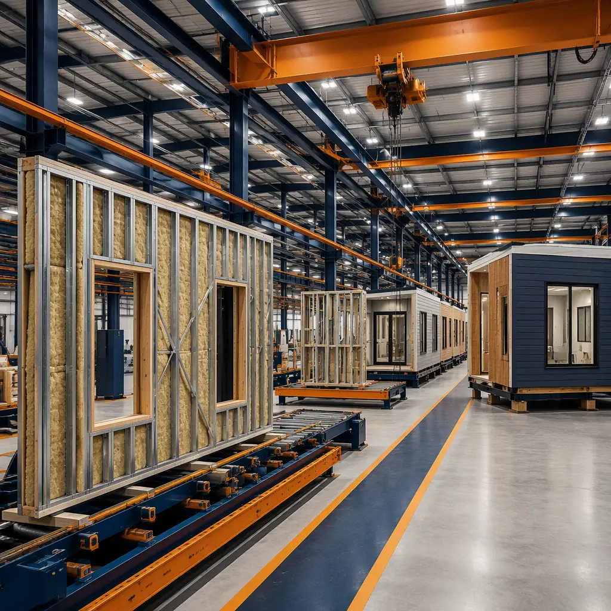
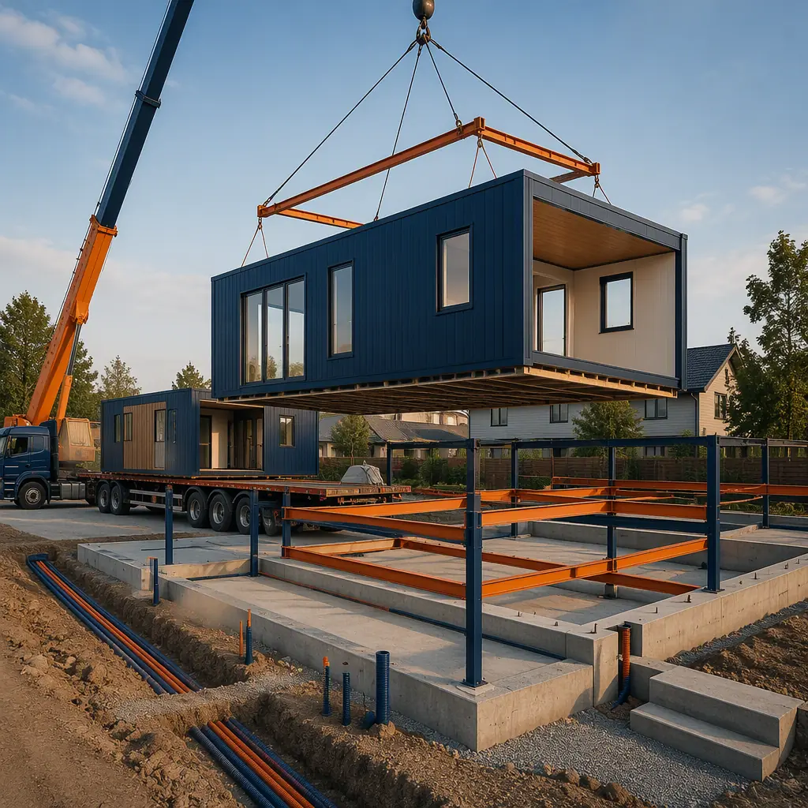
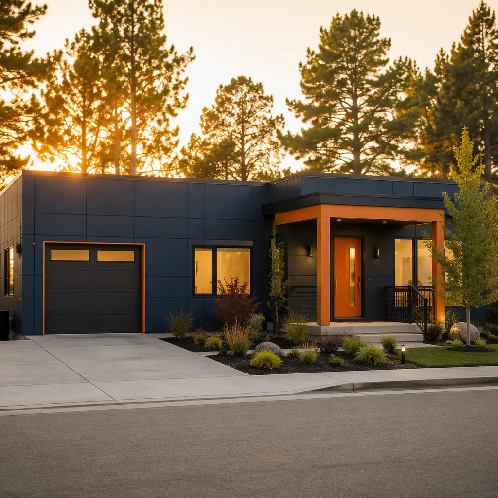

The single-family modular home market has crossed into the mainstream. Industry data from the Manufactured Housing Institute and the Modular Building Institute shows factory-built single-family homes now account for roughly 4–6% of new detached home starts in the United States, and the share is climbing as site-built construction costs push past $180–250 per sq ft in most metros. For a mid-market buyer — the family buying a 3-bedroom, 2-bath home in the 1,400–2,400 sq ft range — a modular home typically costs $120–170 per sq ft for the factory-built structure, and $180–240 per sq ft fully delivered with land, foundation, and site work. The bigger advantage is time: a modular home goes from contract to move-in in 5–7 months, versus 9–14 months for a comparable site-built house, because the house is manufactured indoors while the foundation and utilities are prepared on the lot in parallel. This guide walks through what a modular home really is, what it costs in 2026, how the timeline works, how to finance it, and the checklist a first-time buyer should use to evaluate a builder.

What "Modular" Means for a Single-Family Home
Modular homes are often confused with manufactured homes and kit homes, and the distinction matters for financing, code, and resale. A modular home is built to the same International Residential Code (IRC) as a site-built home, in a factory, in sections called modules, then transported to the lot and set on a permanent foundation by a crane. Because it is built to IRC, it is financed, appraised, and taxed like a site-built home, and it appreciates accordingly. A manufactured home, by contrast, is built to the HUD code, sits on a steel chassis, and is often financed as personal property. A kit or panelized home arrives as lumber packages or panels and is assembled on site by local crews — the factory does far less of the work, so the schedule and quality advantages shrink.
The practical difference for a buyer is where the work happens. In a modular build, 70–85% of the construction — framing, insulation, drywall, wiring, plumbing, windows, and finishes — happens indoors in a climate-controlled factory with inspections at defined quality gates. On site, the remaining work is foundation, utility connections, module set, roof completion over module joints, and final finishes. The result is a home built to a tighter tolerance, with less weather damage and fewer punch-list items, than the same plan built outdoors. Buyers who want to understand how the factory quality system works should read our modular versus site-built quality comparison, which breaks down the inspection framework behind factory-built homes.
2026 Cost Benchmarks: What a Mid-Market Modular Home Actually Costs
The honest number for a modular home is the fully delivered cost, not the factory price. Here is the 2026 benchmark breakdown for a typical 1,800 sq ft, 3-bedroom, 2-bath modular ranch:
| Cost Component | 2026 Typical Range | Notes |
|---|---|---|
| Factory-built structure (installed) | $120–170 / sq ft | Includes modules, transport, and crane set |
| Land (0.25–0.5 acre, suburban) | $50,000–$150,000 | Highly regional; 20–35% of total budget |
| Foundation and site work | $25,000–$50,000 | Slab, crawlspace, or basement; driveway, utilities |
| Permits, fees, inspections | $5,000–$15,000 | Varies widely by municipality |
| Fully delivered total | $180–240 / sq ft | Typically 10–20% below site-built equivalent |
For comparison, a site-built equivalent in most U.S. metros lands at $210–300 per sq ft fully delivered, meaning a modular buyer typically saves $30,000–$80,000 on an 1,800 sq ft home — or gets a larger home for the same budget. The savings come from three places: factory labor productivity, bulk material procurement with minimal waste, and a 4–7 month shorter construction financing period. The trade-off is that the buyer must hold land and carry the project through a construction process, which is why the financing structure matters as much as the sticker price. Our modular cost per square foot guide benchmarks factory-built pricing across building types, and our total cost planning guide covers the full budget picture including soft costs.

The Factory-to-Move-In Timeline: 5–7 Months, Step by Step
The modular timeline is the product of parallel work: the factory builds the house while the site team prepares the land. A typical mid-market project:
- Weeks 0–6: Design and permit. Plan selection or custom design, engineering for the local wind and seismic zone, and the permit package. Factory production slot reserved.
- Weeks 4–10: Site work. Land clearing, foundation (slab, crawlspace, or basement), utility connections, and driveway — completed while the house is still in production.
- Weeks 6–16: Factory production. Modules are framed, insulated, wired, plumbed, finished, and inspected indoors. A 2-module or 3-module ranch typically spends 6–10 weeks on the line.
- Weeks 16–17: Delivery and set. Modules are transported on flatbeds and craned onto the foundation; a single-story home sets in 1–2 days.
- Weeks 17–24: Completion. Roof completion over module joints, utility tie-ins, final inspections, and certificate of occupancy. Move-in at 5–7 months from contract.
Compared with a site-built home's sequential 9–14 months — foundation, then framing, then rough-in, then finishes, each waiting on the last — the modular schedule is both shorter and more predictable. Factory production is not subject to weather delays, and the set-and-complete phase is measured in weeks. Our construction timeline analysis compares factory-built and conventional schedules in detail, including the schedule risk profiles that lenders care about.
Financing a Modular Home: Construction Loans, FHA, and Appraisal
Because modular homes are built to IRC and permanently affixed, they qualify for the same financing as site-built homes — the critical difference is that most buyers need a construction loan during the build, then convert to a permanent mortgage at completion. The standard structure is a construction-to-permanent loan: one closing, one set of fees, and the loan converts automatically when the certificate of occupancy is issued. Buyers should expect a 20% down payment requirement on the total project cost (land plus construction) in most cases, though FHA and VA programs allow lower down payments on modular homes built to IRC on permanent foundations — FHA's 203(b) program treats them as standard one-to-four-family dwellings.
The appraisal is the step where modular projects most often stumble. Appraisers must value the home as a completed dwelling, which means using comparable site-built sales rather than discounting for "prefab" bias — under Fannie Mae and Freddie Mac guidelines, a modular home on a permanent foundation is appraised identically to a site-built home. Buyers should ask their lender to confirm the appraiser's familiarity with factory-built construction before the order is placed, and should be prepared with documentation of the IRC compliance and third-party inspections that make the home equivalent to site-built. The full financing landscape — construction loans, FHA/VA, and the lender's perspective on factory-built projects — is covered in our modular construction financing guide, and our lease versus buy analysis covers the alternative of building to rent.
Design Freedom Within a Proven System
The old image of modular homes as identical boxes is obsolete. A modern modular home is built from modules — typically 12–16 ft wide and 40–60 ft long for transport — that can be combined into a wide range of floor plans: ranch, split-level, two-story, and designs with cathedral ceilings, vaulted great rooms, and attached garages. Buyers choose from builder plan libraries, modify stock plans, or commission fully custom designs, and the factory's CNC-based framing and panel production handles variations without the cost penalty site-built framing would charge. Interior finishes — cabinetry, countertops, flooring, fixtures — are selected from tiered packages, and because everything is installed in a factory, upgrades cost less than the same items installed by site trades.
The architectural ceiling for factory-built homes is high. Custom and high-end modular homes now routinely include flat roofs, floor-to-ceiling glazing, and premium finishes — the same factory techniques scaled up for the luxury market, which we document in our luxury modular homes guide. For buyers considering an accessory dwelling unit or a second structure on the same lot, our modular ADU guide covers the smaller-scale factory-built option, and our design customization guide explains the full range of plan modification options.

Quality and Code: IRC, Third-Party Inspection, Wind and Seismic Zones
Modular homes are inspected twice: once in the factory by state-licensed third-party inspectors, and again on site by the local building department. The factory inspection covers structural framing, insulation, electrical rough-in, plumbing, and final finishes at defined gates, with every module receiving a state-issued label certifying IRC compliance. This double-inspection regime is the reason modular homes have historically lower insurance claim rates for structural and moisture damage than site-built homes — the house is built indoors, protected from weather, on a controlled production line.
Engineering for the destination site is part of the package. The factory engineers the floor system, wall system, and roof system for the specific wind speed, snow load, and seismic design category of the delivery address — a modular home shipped to coastal Florida is engineered differently from one built for the mountain West. Buyers should confirm the builder's engineering covers their county's design criteria and that the foundation design matches the module layout, since foundation and structure must work as one system. The foundation options and their engineering are covered in our foundation systems guide, and the seismic and wind considerations in our seismic design guide and high-wind building guide.
How to Choose a Modular Builder: The Buyer's Checklist
Not all modular builders are equal, and the buyer's due diligence determines whether the 5–7 month timeline and cost savings are real. Work through this checklist before signing:
- State certification and third-party inspections. Verify the factory holds the state's modular certification and uses licensed third-party inspection agencies — this is the legal foundation of the IRC compliance story.
- Firm pricing with a defined scope. The contract should itemize factory price, transport, crane set, foundation, utilities, and finishes, with a clear list of what the buyer is responsible for (site prep, permits, landscaping).
- Engineered-for-site documentation. Confirm the factory engineers each home for the destination county's wind, snow, and seismic criteria, and provides the stamped drawings the local building department needs.
- Factory tour or production video. A reputable builder will show you the production line, the quality gates, and completed projects — the same inspection framework we document in our factory quality control guide.
- References from recent buyers. Ask for three buyers who closed in the last 12 months and ask them two questions: did the schedule hold, and what was on the punch list?
- Transportation and access plan. Confirm the modules can physically reach the lot — route surveys, road widths, and crane access are the most common modular project failures, covered in our transportation and logistics guide.
For the mid-market buyer, the modular home is not a compromise — it is the arithmetic of the 2020s housing market. A comparable home, 10–20% cheaper, delivered in half the time, built indoors to a documented quality standard, and financed and appraised exactly like a site-built house. The only real requirement is a buyer willing to manage the process instead of just signing a contract.
